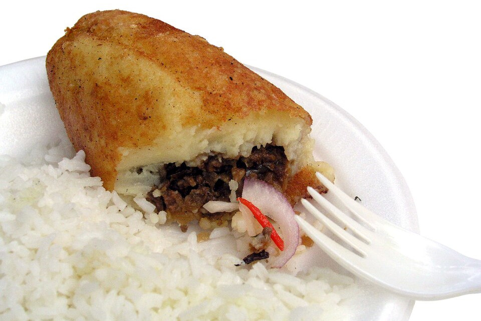

Image by Håkan Svensson(Xauxa). (modified) - Wikimedia Commons - CC-BY-SA-3.0-migrated
Papa rellena(Stuffed potatoes)
Stuffed potatoes are a classic dish of Latin American cuisine, bursting with flavors and seasonings that satisfy even the most discerning palates. From ground pork to beef or chicken fillings, their versatility allows them to be adapted to every diner's taste. A delight to enjoy on any occasion.
Ingredients
- 2 lbs potatoes
- 1 cup picadillo (seasoned ground meat)
- 2 onions
- 2 cloves of garlic
- 2 eggs
- ½ sour orange or lime
- 1 chili pepper
- Breadcrumbs
- Parsley
- A pinch of salt
- Frying oil
Instructions
- To prepare this dish, start by making a thick purée.
- Once that is ready, simultaneously cook the parsley with the garlic, onion, chili pepper, sour orange, additional parsley, salt, and a tablespoon of oil.
- When the purée is lukewarm, take a portion in your hand, flatten it, and place the "picadillo" (minced meat filling) in the center.
- Then, add another portion of purée on top and shape it into a potato-like form or a large ball.
- Next, coat it twice (double-bread it) and fry in hot fat.
Home